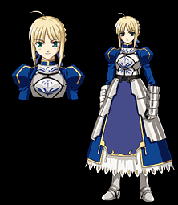

Сэйбер (яп. セイバー)

Cчитает получение Святого Грааля своей главной целью и долгом. Кажется хладнокровной и эгоистичной, хотя и ей присущи человеческие чувства, что она тщательно скрывает. Была призвана Эмией Кирицугу в прошлой, четвертой войне, но проиграла последний поединок со слугой класса лучника. Настоящее имя — Артурия, Король Артур. Сэйбер считает, что звания короля Англии достоин другой человек, менее кровожадный и черствый, чем она сама. С этой целью она и участвует в битве. Основное оружие — невидимый меч, на деле же представляющий собой Экскалибур — легендарный Меч Обещанной Награды. Вместе с Золотыми Ножнами, утерянными Артурией в своей прошлой жизни и делающими владельца неуязвимым для любых атак и для любой магии образует её сильнейший Небесный Фантазм, — «Авалон — Та Далёкая Утопия».
Haзад к Герою
Назад к меню героев